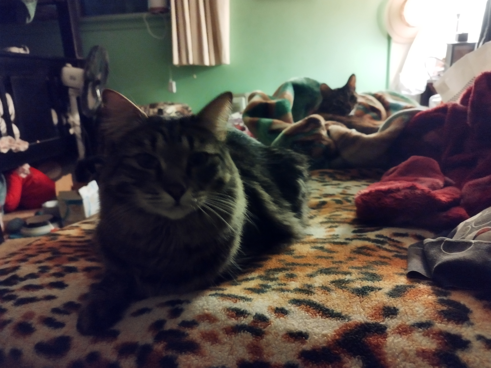

Chicken Pot Pie
Home
- 1lb. chicken
- 4 potatoes
- carrots
- 2 sticks celery
- 2 pie crusts
- chicken stock
- corn starch

- Preheat oven to 375 degrees fahrenheit
- Cube chicken
- Place pie crust into bottom of pie pan
- Bring Stock to a simmer, and add starch
- Add vegetables and chicken to stock
- Pour mixture into prepared pie pan
- Cover with second pie crust, and seal closed
- Vent crust
- Place in oven and bake for 55 minutes, or crust is golden brown
- Engoy <3